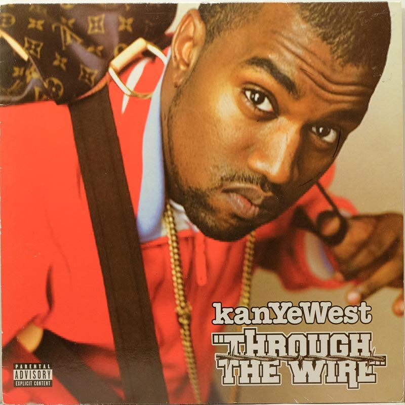

Inspiración "Through the Wire"
Más allá de las controversias y polémicas, hay una parte de la historia de Kanye que siempre me ha parecido inspiradora: su determinación. Antes de ser famoso, era solo un productor, y nadie lo tomaba en serio como rapero.
En 2002, tuvo un accidente de coche que casi lo mata. Le tuvieron que alambrar la mandíbula para que sanara, cualquiera se hubiera tomado un descanso, pero él no. A las dos semanas, con la boca prácticamente cosida, fue al estudio y grabó "Through the Wire".
Aquí hay un artículo que detalla mejor la historia de como se produjo esta canción, a mi parecer una de las mejores de su carrera y mas icónicas.
Transformar el dolor en inspiración
Esa canción es un himno a no rendirse. Para mí, es un recordatorio de que no importan los pretextos, si de verdad quieres algo, encuentras la forma de hacerlo. Esa ética de trabajo de sus inicios es lo que me inspira.
Además, Kanye es uno de los artistas más influyentes en la historia del hip hop,
Un Agente de Cambio Cultural
Pero su impacto va mucho más allá de un solo disco. Kanye ha redefinido el sonido del hip hop múltiples veces, desde el soul sampling de sus inicios hasta la experimentación industrial. En la moda, rompió la barrera entre el streetwear y el high fashion, haciendo que los tenis y las hoodies sean artículos de lujo. Solo hace falta ver los diseños de Yeezy para entender su influencia, como los Yeezy Slides y los miles de diseños que surgieron después inspirados en estas. Quieras o no, su audacia para romper reglas ha influenciado a toda una generación de artistas y creadores a ser ellos mismos sin pedir disculpas.